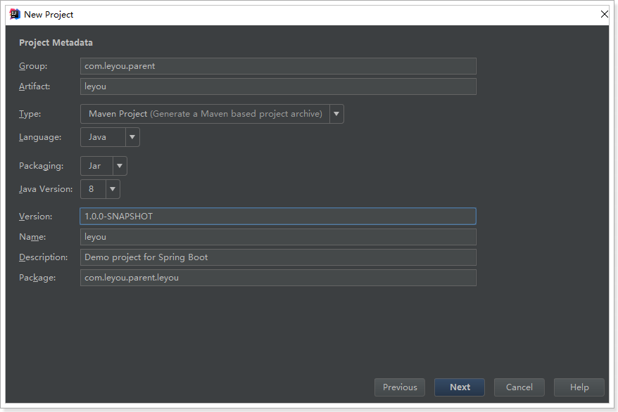
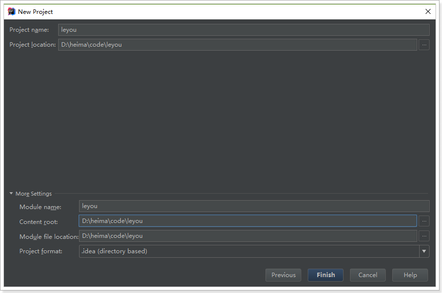
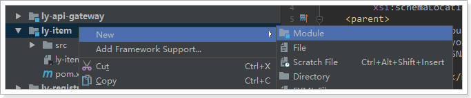
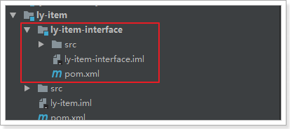
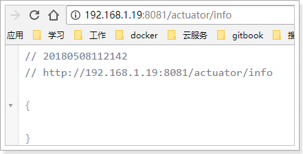
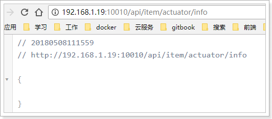
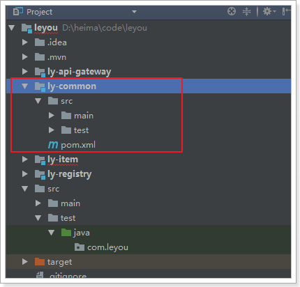
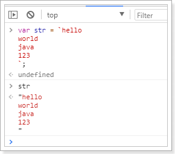

学习电商项目，自然要先了解这个行业，所以我们首先来聊聊电商行业
主要从需求方、盈利模式、技术侧重点这三个方面来看它们的不同
各种企业里面用的管理系统（ERP、HR、OA、CRM、物流管理系统。。。。。。。）
门户网站、电商网站：baidu.com、qq.com、taobao.com、jd.com ......
而我们今天要聊的就是互联网项目中的重要角色：电商
近年来，中国的电子商务快速发展，交易额连创新高，电子商务在各领域的应用不断拓展和深化、相关服务业蓬勃发展、支撑体系不断健全完善、创新的动力和能力不断增强。电子商务正在与实体经济深度融合，进入规模性发展阶段，对经济社会生活的影响不断增大，正成为我国经济发展的新引擎。
中国电子商务研究中心数据显示，截止到 2012 年底，中国电子商务市场交易规模达 7.85万亿人民币，同比增长 30.83%。其中，B2B 电子商务交易额达 6.25 万亿，同比增长 27%。而 2011 年全年，中国电子商务市场交易额达 6 万亿人民币，同比增长 33%，占 GDP 比重上升到 13%；2012 年，电子商务占 GDP 的比重已经高达 15%。
来看看双十一的成交数据：
2016双11开场30分钟，创造每秒交易峰值17.5万笔，每秒支付峰值12万笔的新纪录。菜鸟单日物流订单量超过4.67亿，创历史新高。
从上面的数据我们不仅要看到钱，更要看到背后的技术实力。正是得益于电商行业的高强度并发压力，促使了BAT等巨头们的技术进步。电商行业有些什么特点呢？
电商行业的一些常见模式：
SaaS：软件即服务
SOA：面向服务
RPC：远程过程调用
RMI：远程方法调用
PV：(page view)，即页面浏览量；
用户每1次对网站中的每个网页访问均被记录1次。用户对同一页面的多次访问，访问量累计
UV：(unique visitor)，独立访客
指访问某个站点或点击某条新闻的不同IP地址的人数。在同一天内，uv只记录第一次进入网站的具有独立IP的访问者，在同一天内再次访问该网站则不计数。
PV与带宽：
PV、QPS、并发
QPS：每秒处理的请求数量。8000/s
由PV和QPS如何需要部署的服务器数量？
项目经理：管人
产品经理：设计需求原型
测试：
前端：大前端。node
后端：
移动端：
项目开发流程图：

公司现状：

乐优商城架构缩略图，大图请参考课前资料：

整个乐优商城可以分为两部分：后台管理系统、前台门户系统。
后台管理：

前台门户

无论是前台还是后台系统，都共享相同的微服务集群，包括：
前端技术：
后端技术：
为了保证开发环境的统一，希望每个人都按照我的环境来配置：
idea大家可以在我的课前资料中找到。另外，使用帮助大家可以参考课前资料的《idea使用指南.md》
我们在开发的过程中，为了保证以后的生产、测试环境统一。尽量都采用域名来访问项目。
一级域名：www.leyou.com
二级域名：manage.leyou.com , api.leyou.com
我们可以通过switchhost工具来修改自己的host对应的地址，只要把这些域名指向127.0.0.1，那么跟你用localhost的效果是完全一样的。
switchhost可以去课前资料寻找。
创建统一的父工程：leyou，用来管理依赖及其版本，注意是创建project，而不是moudle

填写项目信息：

注意：
父工程不需要代码，只是管理依赖，因此我们不选择任何SpringCloud的依赖
跳过依赖选择。
填写保存的位置信息：

然后将pom文件修改成我这个样子：
<?xml version="1.0" encoding="UTF-8"?>
<project xmlns="http://maven.apache.org/POM/4.0.0" xmlns:xsi="http://www.w3.org/2001/XMLSchema-instance"
xsi:schemaLocation="http://maven.apache.org/POM/4.0.0 http://maven.apache.org/xsd/maven-4.0.0.xsd">
<modelVersion>4.0.0</modelVersion>
<groupId>com.leyou.parent</groupId>
<artifactId>leyou</artifactId>
<version>1.0.0-SNAPSHOT</version>
<packaging>pom</packaging>
<name>leyou</name>
<description>Demo project for Spring Boot</description>
<parent>
<groupId>org.springframework.boot</groupId>
<artifactId>spring-boot-starter-parent</artifactId>
<version>2.0.1.RELEASE</version>
<relativePath/> <!-- lookup parent from repository -->
</parent>
<properties>
<project.build.sourceEncoding>UTF-8</project.build.sourceEncoding>
<project.reporting.outputEncoding>UTF-8</project.reporting.outputEncoding>
<java.version>1.8</java.version>
<spring-cloud.version>Finchley.RC1</spring-cloud.version>
<mybatis.starter.version>1.3.2</mybatis.starter.version>
<mapper.starter.version>2.0.2</mapper.starter.version>
<druid.starter.version>1.1.9</druid.starter.version>
<mysql.version>5.1.32</mysql.version>
<pageHelper.starter.version>1.2.3</pageHelper.starter.version>
<leyou.latest.version>1.0.0-SNAPSHOT</leyou.latest.version>
<fastDFS.client.version>1.26.1-RELEASE</fastDFS.client.version>
</properties>
<dependencyManagement>
<dependencies>
<!-- springCloud -->
<dependency>
<groupId>org.springframework.cloud</groupId>
<artifactId>spring-cloud-dependencies</artifactId>
<version>${spring-cloud.version}</version>
<type>pom</type>
<scope>import</scope>
</dependency>
<!-- mybatis启动器 -->
<dependency>
<groupId>org.mybatis.spring.boot</groupId>
<artifactId>mybatis-spring-boot-starter</artifactId>
<version>${mybatis.starter.version}</version>
</dependency>
<!-- 通用Mapper启动器 -->
<dependency>
<groupId>tk.mybatis</groupId>
<artifactId>mapper-spring-boot-starter</artifactId>
<version>${mapper.starter.version}</version>
</dependency>
<!-- 分页助手启动器 -->
<dependency>
<groupId>com.github.pagehelper</groupId>
<artifactId>pagehelper-spring-boot-starter</artifactId>
<version>${pageHelper.starter.version}</version>
</dependency>
<!-- mysql驱动 -->
<dependency>
<groupId>mysql</groupId>
<artifactId>mysql-connector-java</artifactId>
<version>${mysql.version}</version>
</dependency>
<!--FastDFS客户端-->
<dependency>
<groupId>com.github.tobato</groupId>
<artifactId>fastdfs-client</artifactId>
<version>${fastDFS.client.version}</version>
</dependency>
</dependencies>
</dependencyManagement>
<build>
<plugins>
<plugin>
<groupId>org.springframework.boot</groupId>
<artifactId>spring-boot-maven-plugin</artifactId>
</plugin>
</plugins>
</build>
<repositories>
<repository>
<id>spring-milestones</id>
<name>Spring Milestones</name>
<url>https://repo.spring.io/milestone</url>
<snapshots>
<enabled>false</enabled>
</snapshots>
</repository>
</repositories>
</project>可以发现，我们在父工程中引入了SpringCloud等很多以后需要用到的依赖，以后创建的子工程就不需要自己引入了。
最后，删除自动生成的LeyouApplication启动类、测试类以及application.properties文件，我们不需要。
这个大家应该比较熟悉了。
我们的注册中心，起名为：ly-registry
这次我们就不Spring使用提供的脚手架了。直接创建maven项目，自然会继承父类的依赖：
选择新建module：

选择maven安装，但是不要选择骨架：

然后填写项目坐标，我们的项目名称为ly-registry:

选择安装目录，因为是聚合项目，目录应该是在父工程leyou的下面：

添加EurekaServer的依赖：
<?xml version="1.0" encoding="UTF-8"?>
<project xmlns="http://maven.apache.org/POM/4.0.0"
xmlns:xsi="http://www.w3.org/2001/XMLSchema-instance"
xsi:schemaLocation="http://maven.apache.org/POM/4.0.0 http://maven.apache.org/xsd/maven-4.0.0.xsd">
<parent>
<artifactId>leyou</artifactId>
<groupId>com.leyou.parent</groupId>
<version>1.0.0-SNAPSHOT</version>
</parent>
<modelVersion>4.0.0</modelVersion>
<groupId>com.leyou.common</groupId>
<artifactId>ly-registry</artifactId>
<version>1.0.0-SNAPSHOT</version>
<dependencies>
<dependency>
<groupId>org.springframework.cloud</groupId>
<artifactId>spring-cloud-starter-netflix-eureka-server</artifactId>
</dependency>
</dependencies>
</project>@SpringBootApplication
@EnableEurekaServer
public class LyRegistry {
public static void main(String[] args) {
SpringApplication.run(LyRegistry.class, args);
}
}server:
port: 10086
spring:
application:
name: ly-registry
eureka:
client:
fetch-registry: false
register-with-eureka: false
service-url:
defaultZone: http://127.0.0.1:${server.port}/eureka
server:
enable-self-preservation: false # 关闭自我保护
eviction-interval-timer-in-ms: 5000 # 每隔5秒进行一次服务列表清理目前，整个项目的结构如图：
与上面类似，选择maven方式创建Module，然后填写项目名称，我们命名为：ly-api-gateway

填写保存的目录：

这里我们需要添加Zuul和EurekaClient的依赖：
<?xml version="1.0" encoding="UTF-8"?>
<project xmlns="http://maven.apache.org/POM/4.0.0"
xmlns:xsi="http://www.w3.org/2001/XMLSchema-instance"
xsi:schemaLocation="http://maven.apache.org/POM/4.0.0 http://maven.apache.org/xsd/maven-4.0.0.xsd">
<parent>
<artifactId>leyou</artifactId>
<groupId>com.leyou.parent</groupId>
<version>1.0.0-SNAPSHOT</version>
</parent>
<modelVersion>4.0.0</modelVersion>
<groupId>com.leyou.common</groupId>
<artifactId>ly-api-gateway</artifactId>
<version>1.0.0-SNAPSHOT</version>
<dependencies>
<dependency>
<groupId>org.springframework.cloud</groupId>
<artifactId>spring-cloud-starter-netflix-zuul</artifactId>
</dependency>
<dependency>
<groupId>org.springframework.cloud</groupId>
<artifactId>spring-cloud-starter-netflix-eureka-client</artifactId>
</dependency>
<!--是springboot提供的微服务检测接口，默认对外提供几个接口：/info-->
<dependency>
<groupId>org.springframework.boot</groupId>
<artifactId>spring-boot-starter-actuator</artifactId>
</dependency>
</dependencies>
</project>@SpringBootApplication
@EnableDiscoveryClient
@EnableZuulProxy
public class LyApiGateway {
public static void main(String[] args) {
SpringApplication.run(LyApiGateway.class, args);
}
}server:
port: 10010
spring:
application:
name: api-gateway
eureka:
client:
service-url:
defaultZone: http://127.0.0.1:10086/eureka
registry-fetch-interval-seconds: 5
instance:
prefer-ip-address: true
ip-address: 127.0.0.1
instance-id: ${spring.application.name}:${server.port}
zuul:
prefix: /api # 添加路由前缀
retryable: true
ribbon:
ConnectTimeout: 250 # 连接超时时间(ms)
ReadTimeout: 2000 # 通信超时时间(ms)
OkToRetryOnAllOperations: true # 是否对所有操作重试
MaxAutoRetriesNextServer: 1 # 同一服务不同实例的重试次数
MaxAutoRetries: 1 # 同一实例的重试次数
hystrix:
command:
default:
execution:
isolation:
thread:
timeoutInMillisecond: 10000 # 熔断超时时长：10000ms目前，leyou下有两个子模块：
目前，服务的结构如图所示：
截止到这里，我们已经把基础服务搭建完毕，为了便于开发，统一配置中心（ConfigServer）我们留待以后添加。
既然是一个全品类的电商购物平台，那么核心自然就是商品。因此我们要搭建的第一个服务，就是商品微服务。其中会包含对于商品相关的一系列内容的管理，包括：
我们先完成项目的搭建：
因为与商品的品类相关，我们的工程命名为ly-item.
需要注意的是，我们的ly-item是一个微服务，那么将来肯定会有其它系统需要来调用服务中提供的接口，因此肯定也会使用到接口中关联的实体类。
因此这里我们需要使用聚合工程，将要提供的接口及相关实体类放到独立子工程中，以后别人引用的时候，只需要知道坐标即可。
我们会在ly-item中创建两个子工程：
调用关系如图所示：

依然是使用maven构建：

保存的位置：

不需要任何依赖，我们可以把项目打包方式设置为pom
<?xml version="1.0" encoding="UTF-8"?>
<project xmlns="http://maven.apache.org/POM/4.0.0"
xmlns:xsi="http://www.w3.org/2001/XMLSchema-instance"
xsi:schemaLocation="http://maven.apache.org/POM/4.0.0 http://maven.apache.org/xsd/maven-4.0.0.xsd">
<parent>
<artifactId>leyou</artifactId>
<groupId>com.leyou.parent</groupId>
<version>1.0.0-SNAPSHOT</version>
</parent>
<modelVersion>4.0.0</modelVersion>
<groupId>com.leyou.service</groupId>
<artifactId>ly-item</artifactId>
<version>1.0.0-SNAPSHOT</version>
<!-- 打包方式为pom -->
<packaging>pom</packaging>
</project>在ly-item工程上点击右键，选择new > module:

依然是使用maven构建，注意父工程是ly-item：

注意：接下来填写的目录结构需要自己手动完成，保存到ly-item下的ly-item-interface目录中：

点击Finish完成。
此时的项目结构：

与ly-item-interface类似，我们选择在ly-item上右键，新建module，然后填写项目信息：

填写存储位置，是在/ly-item/ly-item-service目录

点击Finish完成。
如图所示：

我们打开ly-item的pom查看，会发现ly-item-interface和ly-item-service都已经称为module了：

接下来我们给ly-item-service中添加依赖：
思考一下我们需要什么？
ly-item-interface中的实体类这些依赖，我们在顶级父工程：leyou中已经添加好了。所以直接引入即可：
<?xml version="1.0" encoding="UTF-8"?>
<project xmlns="http://maven.apache.org/POM/4.0.0"
xmlns:xsi="http://www.w3.org/2001/XMLSchema-instance"
xsi:schemaLocation="http://maven.apache.org/POM/4.0.0 http://maven.apache.org/xsd/maven-4.0.0.xsd">
<parent>
<artifactId>ly-item</artifactId>
<groupId>com.leyou.service</groupId>
<version>1.0.0-SNAPSHOT</version>
</parent>
<modelVersion>4.0.0</modelVersion>
<groupId>com.leyou.service</groupId>
<artifactId>ly-item-service</artifactId>
<version>1.0.0-SNAPSHOT</version>
<dependencies>
<!--Eureka客户端-->
<dependency>
<groupId>org.springframework.cloud</groupId>
<artifactId>spring-cloud-starter-netflix-eureka-client</artifactId>
</dependency>
<!--web启动器-->
<dependency>
<groupId>org.springframework.boot</groupId>
<artifactId>spring-boot-starter-web</artifactId>
</dependency>
<!-- mybatis启动器 -->
<dependency>
<groupId>org.mybatis.spring.boot</groupId>
<artifactId>mybatis-spring-boot-starter</artifactId>
<version>${mybatis.starter.version}</version>
</dependency>
<!-- 通用Mapper启动器 -->
<dependency>
<groupId>tk.mybatis</groupId>
<artifactId>mapper-spring-boot-starter</artifactId>
<version>${mapper.starter.version}</version>
</dependency>
<!-- 分页助手启动器 -->
<dependency>
<groupId>com.github.pagehelper</groupId>
<artifactId>pagehelper-spring-boot-starter</artifactId>
<version>${pageHelper.starter.version}</version>
</dependency>
<!-- mysql驱动 -->
<dependency>
<groupId>mysql</groupId>
<artifactId>mysql-connector-java</artifactId>
<version>${mysql.version}</version>
</dependency>
<dependency>
<groupId>com.leyou.service</groupId>
<artifactId>ly-item-interface</artifactId>
<version>${leyou.latest.version}</version>
</dependency>
<dependency>
<groupId>org.springframework.boot</groupId>
<artifactId>spring-boot-starter-actuator</artifactId>
</dependency>
</dependencies>
</project>ly-item-interface中需要什么我们暂时不清楚，所以先不管。
整个结构：
在整个ly-item工程中，只有ly-item-service是需要启动的。因此在其中编写启动类即可：
@SpringBootApplication
@EnableDiscoveryClient
public class LyItemService {
public static void main(String[] args) {
SpringApplication.run(LyItemService.class, args);
}
}然后是全局属性文件：
server:
port: 8081
spring:
application:
name: item-service
datasource:
url: jdbc:mysql://localhost:3306/heima
username: root
password: 123
hikari:
maximum-pool-size: 30
minimum-idle: 10
eureka:
client:
service-url:
defaultZone: http://127.0.0.1:10086/eureka
instance:
lease-renewal-interval-in-seconds: 5 # 每隔5秒发送一次心跳
lease-expiration-duration-in-seconds: 10 # 10秒不发送就过期
prefer-ip-address: true
ip-address: 127.0.0.1
instance-id: ${spring.application.name}:${server.port}既然商品微服务已经创建，接下来肯定要添加路由规则到Zuul中，我们不使用默认的路由规则。
zuul:
prefix: /api # 添加路由前缀
retryable: true
routes:
item-service: /item/** # 将商品微服务映射到/item/**我们分别启动：ly-registry，ly-api-gateway，ly-item-service

查看Eureka面板：

为了测试路由规则是否畅通，我们是不是需要在item-service中编写一个controller接口呢？
其实不需要，Spring提供了一个依赖：actuator
只要我们添加了actuator的依赖，它就会为我们生成一系列的访问接口：
添加依赖：
<dependency>
<groupId>org.springframework.boot</groupId>
<artifactId>spring-boot-starter-actuator</artifactId>
</dependency>重启后访问Eureka控制台：
鼠标悬停在item-service上，会显示一个地址：

这就是actuator提供的接口，我们点击访问：

因为我们没有添加信息，所以是一个空的json，但是可以肯定的是：我们能够访问到item-service了。
接下来我们通过路由访问试试，根据路由规则，我们需要访问的地址是：
http://127.0.0.1:10010/api/item/actuator/info

有些工具或通用的约定内容，我们希望各个服务共享，因此需要创建一个工具模块：ly-common
使用maven来构建module：

位置信息：

结构：

目前还不需要编码。
后端项目搭建完毕，接下来就是前端页面了。不过在这之前需要一些准备工作。我们需要学习ES6的语法标准。
什么是ES6？就是ECMAScript第6版标准。
来看下前端的发展历程：
web1.0时代：
web2.0时代：
ECMAscript标准规范。JavaScript和JScript都是ECMAScript的标准实现者，随后各大浏览器厂商纷纷实现了ECMAScript标准。所以，ECMAScript是浏览器脚本语言的规范，而各种我们熟知的js语言，如JavaScript则是规范的具体实现。
而后，ECMAScript就进入了快速发展期。
1998年6月，ECMAScript 2.0 发布。
1999年12月，ECMAScript 3.0 发布。这时，ECMAScript 规范本身也相对比较完善和稳定了，但是接下来的事情，就比较悲剧了。
2007年10月。。。。ECMAScript 4.0 草案发布。
这次的新规范，历时颇久，规范的新内容也有了很多争议。在制定ES4的时候，是分成了两个工作组同时工作的。
ECMAScript 4 的很多主张比较激进，改动较大。而 ECMAScript 3.1 则主张小幅更新。最终经过 TC39 的会议，决定将一部分不那么激进的改动保留发布为 ECMAScript 3.1，而ES4的内容，则延续到了后来的ECMAScript5和6版本中
2009年12月，ECMAScript 5 发布。
2011年6月，ECMAScript 5.1 发布。
2015年6月，ECMAScript 6，也就是 ECMAScript 2015 发布了。 并且从 ECMAScript 6 开始，开始采用年号来做版本。即 ECMAScript 2015，就是ECMAScript6。
我们这里只把一些常用的进行学习，更详细的大家参考：阮一峰的ES6教程
var
之前，js定义变量只有一个关键字：var
var有一个问题，就是定义的变量有时会莫名奇妙的成为全局变量。
例如这样的一段代码：
for(var i = 0; i < 5; i++){
console.log(i);
}
console.log("循环外：" + i)你猜下打印的结果是什么？

let
let所声明的变量，只在let命令所在的代码块内有效。
我们把刚才的var改成let试试：
for(let i = 0; i < 5; i++){
console.log(i);
}
console.log("循环外：" + i)结果：

const
const声明的变量是常量，不能被修改
新的API
ES6为字符串扩展了几个新的API：
includes()：返回布尔值，表示是否找到了参数字符串。startsWith()：返回布尔值，表示参数字符串是否在原字符串的头部。endsWith()：返回布尔值，表示参数字符串是否在原字符串的尾部。实验一下：

字符串模板
ES6中提供了`来作为字符串模板标记。我们可以这么玩：

在两个`之间的部分都会被作为字符串的值，不管你任意换行，甚至加入js脚本
键盘是的1的左侧，tab的上侧，esc的正下方
数组解构
比如有一个数组：
let arr = [1,2,3]我想获取其中的值，只能通过角标。ES6可以这样：
const [x,y,z] = arr;// x，y，z将与arr中的每个位置对应来取值
// 然后打印
console.log(x,y,z);结果：

对象解构
例如有个person对象：
const person = {
name:"jack",
age:21,
language: ['java','js','css']
}我们可以这么做：
// 解构表达式获取值
const {name,age,language} = person;
// 打印
console.log(name);
console.log(age);
console.log(language);结果：

如过想要用其它变量接收，需要额外指定别名：

{name:n}：name是person中的属性名，冒号后面的n是解构后要赋值给的变量。函数参数默认值
在ES6以前，我们无法给一个函数参数设置默认值，只能采用变通写法：
function add(a , b) {
// 判断b是否为空，为空就给默认值1
b = b || 1;
return a + b;
}
// 传一个参数
console.log(add(10));现在可以这么写：
function add(a , b = 1) {
return a + b;
}
// 传一个参数
console.log(add(10));箭头函数
ES6中定义函数的简写方式：
一个参数时：
var print = function (obj) {
console.log(obj);
}
// 简写为：
var print2 = obj => console.log(obj);多个参数：
// 两个参数的情况：
var sum = function (a , b) {
return a + b;
}
// 简写为：
var sum2 = (a,b) => a+b;代码不止一行，可以用{}括起来
var sum3 = (a,b) => {
return a + b;
}对象的函数属性简写
比如一个Person对象，里面有eat方法：
let person = {
name: "jack",
// 以前：
eat: function (food) {
console.log(this.name + "在吃" + food);
},
// 箭头函数版：
eat2: food => console.log(person.name + "在吃" + food),// 这里拿不到this
// 简写版：
eat3(food){
console.log(this.name + "在吃" + food);
}
}箭头函数结合解构表达式
比如有一个函数：
const person = {
name:"jack",
age:21,
language: ['java','js','css']
}
function hello(person) {
console.log("hello," + person.name)
}如果用箭头函数和解构表达式
var hi = ({name}) => console.log("hello," + name);数组中新增了map和reduce方法。
map
map()：接收一个函数，将原数组中的所有元素用这个函数处理后放入新数组返回。
举例：有一个字符串数组，我们希望转为int数组
let arr = ['1','20','-5','3'];
console.log(arr)
arr = arr.map(s => parseInt(s));
console.log(arr) 
reduce
reduce()：接收一个函数（必须）和一个初始值（可选），该函数接收两个参数：
reduce()会从左到右依次把数组中的元素用reduce处理，并把处理的结果作为下次reduce的第一个参数。如果是第一次，会把前两个元素作为计算参数，或者把用户指定的初始值作为起始参数
举例：
const arr = [1,20,-5,3]没有初始值：

指定初始值：

所谓Promise，简单说就是一个容器，里面保存着某个未来才会结束的事件（通常是一个异步操作）的结果。从语法上说，Promise 是一个对象，从它可以获取异步操作的消息。Promise 提供统一的 API，各种异步操作都可以用同样的方法进行处理。
感觉跟java的Future类很像啊，有木有！
我们可以通过Promise的构造函数来创建Promise对象，并在内部封装一个异步执行的结果。
语法：
const promise = new Promise(function(resolve, reject) {
// ... 执行异步操作
if (/* 异步操作成功 */){
resolve(value);// 调用resolve，代表Promise将返回成功的结果
} else {
reject(error);// 调用reject，代表Promise会返回失败结果
}
});这样，在promise中就封装了一段异步执行的结果。
如果我们想要等待异步执行完成，做一些事情，我们可以通过promise的then方法来实现,语法：
promise.then(function(value){
// 异步执行成功后的回调
});如果想要处理promise异步执行失败的事件，还可以跟上catch：
promise.then(function(value){
// 异步执行成功后的回调
}).catch(function(error){
// 异步执行失败后的回调
})示例：
const p = new Promise(function (resolve, reject) {
// 这里我们用定时任务模拟异步
setTimeout(() => {
const num = Math.random();
// 随机返回成功或失败
if (num < 0.5) {
resolve("成功！num:" + num)
} else {
reject("出错了！num:" + num)
}
}, 300)
})
// 调用promise
p.then(function (msg) {
console.log(msg);
}).catch(function (msg) {
console.log(msg);
})结果：


ES6提供了Set和Map的数据结构。
Set，本质与数组类似。不同在于Set中只能保存不同元素，如果元素相同会被忽略。跟java很像吧。
构造函数：
// Set构造函数可以接收一个数组或空
let set = new Set();
set.add(1);// [1]
// 接收数组
let set2 = new Set([2,3,4,5,5]);// 得到[2,3,4,5]普通方法：
set.add(1);// 添加
set.clear();// 清空
set.delete(2);// 删除指定元素
set.has(2); // 判断是否存在
set.keys();// 返回所有key
set.values();// 返回所有值
set.entries();// 返回键值对集合
// 因为set没有键值对，所有其keys、values、entries方法返回值一样的。
set.size; // 元素个数。是属性，不是方法。map，本质是与Object类似的结构。不同在于，Object强制规定key只能是字符串。而Map结构的key可以是任意对象。即：
构造函数：
// map接收一个数组，数组中的元素是键值对数组
const map = new Map([
['key1','value1'],
['key2','value2'],
])
// 或者接收一个set
const set = new Set([
['key1','value1'],
['key2','value2'],
])
const map2 = new Map(set)
// 或者其它map
const map3 = new Map(map);方法：

模块化就是把代码进行拆分，方便重复利用。类似java中的导包：要使用一个包，必须先导包。
而JS中没有包的概念，换来的是 模块。
模块功能主要由两个命令构成：export和import。
export命令用于规定模块的对外接口，import命令用于导入其他模块提供的功能。比如我定义一个js文件:hello.js，里面有一个对象：
const util = {
sum(a,b){
return a + b;
}
}我可以使用export将这个对象导出：
const util = {
sum(a,b){
return a + b;
}
}
export util;当然，也可以简写为：
export const util = {
sum(a,b){
return a + b;
}
}export不仅可以导出对象，一切JS变量都可以导出。比如：基本类型变量、函数、数组、对象。
当要导出多个值时，还可以简写。比如我有一个文件：user.js：
var name = "jack"
var age = 21
export {name,age}省略名称
上面的导出代码中，都明确指定了导出的变量名，这样其它人在导入使用时就必须准确写出变量名，否则就会出错。
因此js提供了default关键字，可以对导出的变量名进行省略
例如：
// 无需声明对象的名字
export default {
sum(a,b){
return a + b;
}
}这样，当使用者导入时，可以任意起名字
使用export命令定义了模块的对外接口以后，其他 JS 文件就可以通过import命令加载这个模块。
例如我要使用上面导出的util：
// 导入util
import util from 'hello.js'
// 调用util中的属性
util.sum(1,2)要批量导入前面导出的name和age：
import {name, age} from 'user.js'
console.log(name + " , 今年"+ age +"岁了")但是上面的代码暂时无法测试，因为浏览器目前还不支持ES6 的导入和导出功能。除非借助于工具，把ES6 的语法进行编译降级到ES5，比如Babel-cli工具
我们暂时不做测试，大家了解即可。
ES6给Object拓展了许多新的方法，如：
[[k1,v1],[k2,v2],...]assian(dest, ...src) ：将多个src对象的值 拷贝到 dest中（浅拷贝）。

ES6给数组新增了许多方法：